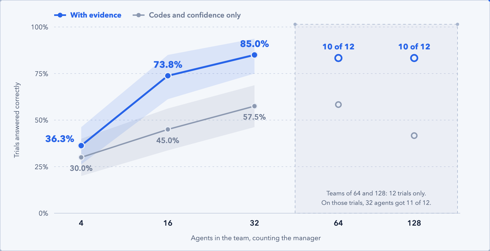
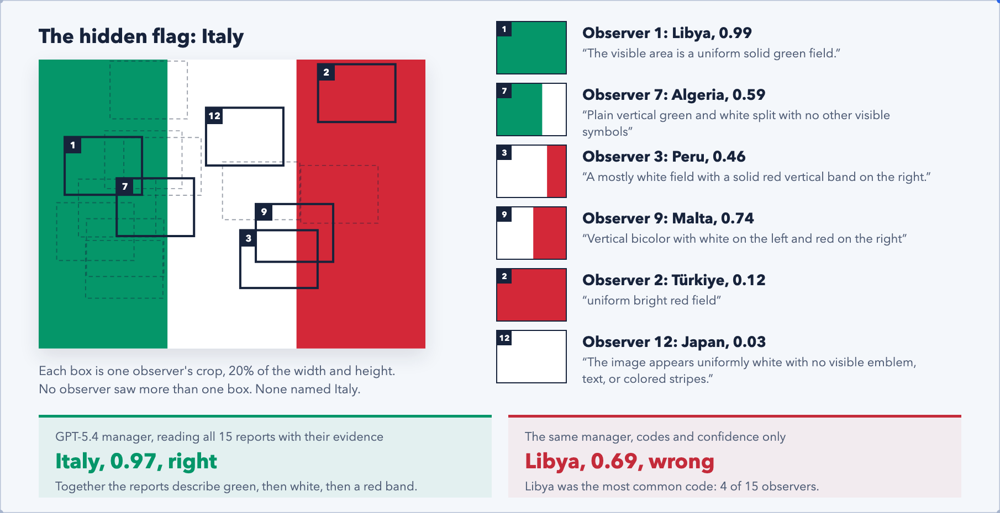
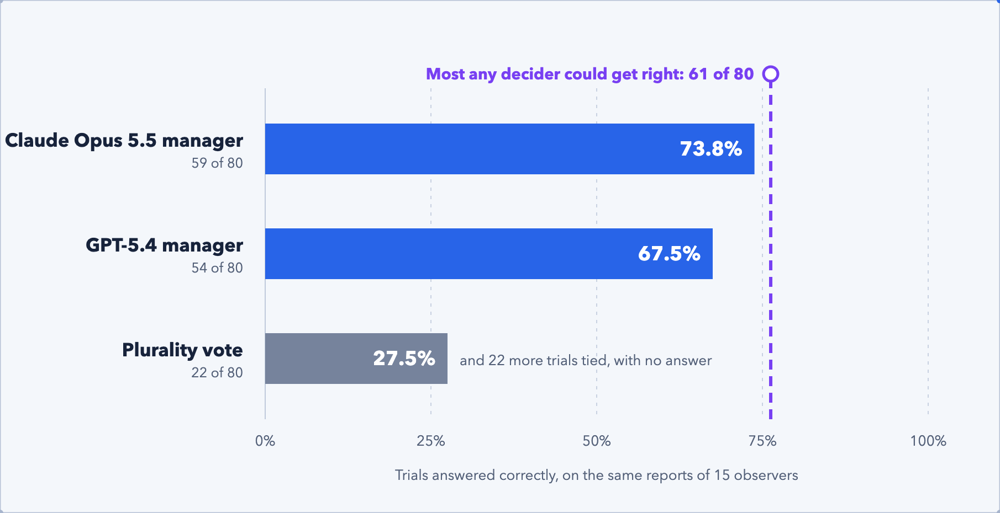
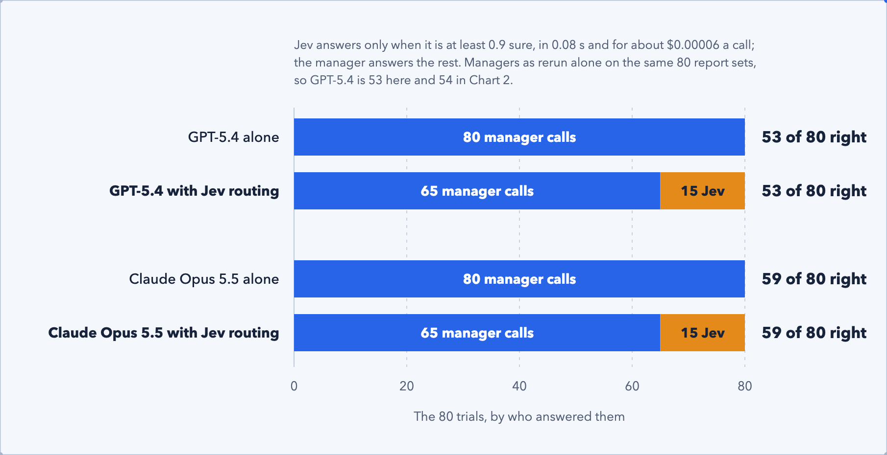

If you build with AI agents, you have probably already faced the choice. When the answers are not good enough, do you add more agents, or put a stronger model in charge of the final decision? NTT Research recently reported that adding agents helps only up to a point, and that the decision-maker matters a great deal. We tested both claims on a task we could score exactly, and then asked a third question: can a fast, cheap decision model help the manager decide?
The NTT Research article Can Adding More AI Agents Reduce Performance? describes a Flag Game: agents each see a small crop of a hidden national flag and must name the country. Group performance "peaked at 16 agents, then flattened at 32 and declined beyond it." The article adds: "Deploying 128 agents produced no performance benefit over far smaller groups." It also reports that a stronger model as the decision-maker improved the result. The companion paper, When Is Collective Intelligence a Lottery?, gives the theory. Neither publishes the prompts, the flag set, the crop rules or the raw results, so what follows is an independent experiment prompted by that work, not a reproduction.
We built it the way we think agent-built work should be checked: every change proves itself, deterministic checks run first, and an independent judge compares the work with the task. Part of the answer is about which kind of judge to trust.
We built the test so that a mistake would show
Forty flags of United Nations member states, each cut into crops of 20% of its width and height, at two different sets of crop positions: 80 trials in all. Each observer, GPT-5.4 Mini, saw one crop and reported a country code, a confidence and up to three pieces of evidence. A manager, GPT-5.4, read the reports and named the flag. Teams ranged from 4 to 128 agents, counting the manager. Every language model ran through Cursor's command-line agent in the same isolated way, one call at a time, with no cache. Every rule, from the crop generator to the statistics, was written down and committed before the run it governed. Two later additions, a calibration measure and a cross-validated cutoff, were written down before they were computed and are named as later below. Every step was checked by scripts that did not produce the data. The final run made 5,520 calls.
Each percentage is the share of the 80 trials answered correctly. The ranges in brackets show how far each result could move by chance: when a range includes zero, the difference may not be real.
Team size and evidence
1. A bigger team helped, but only up to 32 agents
With 4 agents the manager was right on 29 of 80 trials, 36.3%. With 16 it was right on 59, 73.8%, and with 32 on 68, 85.0%. The step from 16 to 32 was the smaller one, 11.3 points (1.3 to 22.5). Past 32 we saw no gain: on 12 trials run at every size, teams of 64 and 128 were each right on 10, against 11 for the team of 32. Those 12 trials are too few to say whether larger teams do worse. The curve in NTT Research's Flag Game article peaked at 16 and ours kept rising to 32, under a setup we chose ourselves, so the two do not contradict each other. Both say the same thing: past some size, more agents stop paying.

2. The manager's reading of the reasons did most of the work, not the vote count
We gave every manager a twin that saw the same reports with each observer's country code and confidence, but none of the evidence. With 16 agents the twin was 28.8 points lower (18.8 to 40.0), and with 32 it was 27.5 points lower. With 4 agents the gap was 6.3 points, too small to tell from chance. A single observer was right only 15.2% of the time. A large team works because the manager can weigh fifteen or thirty-one partial descriptions of the same flag, and that only helps if the descriptions reach the manager.

3. Better observers mattered, and mixing models added nothing more
At a team of 8, seven Claude Sonnet 5.5 observers were right on 53 of 80 trials, against 42 for seven GPT-5.4 Mini observers: 13.8 points better (5.0 to 22.5). A mixed team of four and three was also right on 53. In NTT Research's Flag Game study, a mixed team did best. In our setup a mixed team did as well as the stronger model alone, and no better.
Who decides
4. A language model manager beat the vote by a wide margin
We froze the reports of 15 Mini observers per trial and gave the identical reports to a plurality vote and two language model managers, each required to choose from the countries the observers named, or "other". A plurality vote was right on 22 of 80 trials, 27.5%; it tied, and so gave no answer, on 22 more. GPT-5.4 was right on 54, 67.5%, and Claude Opus 5.5 on 59, 73.8%: 40.0 and 46.3 points above the vote. (Free to name any country, the same GPT-5.4 manager was right on 59, as in finding 1.) The difference between the two managers, 6.3 points, was too small to tell from chance. The true flag was among the candidates on only 61 of 80 trials, so the best manager was close to the ceiling the reports allowed.
Because a router lets Jev answer some trials on its own, we first measured how it does alone
Jev is TypeSafe's decision model, which answers a typed question with a probability for each option instead of writing text. Pinned to version jev-1.13.0, it was right on 32 of 80 trials, 40.0%: better than the vote by 12.5 points, but well below either language model. It answered in 0.08 seconds, against 20.5 seconds for GPT-5.4 and 11.2 for Opus through the agent, and a call cost about $0.00006 against $0.04 and $0.09.

Jev as a helper
5. Beside the managers, Jev rarely made them better
Then we tested what the question was really about: Jev as a helper. The managers ran again on the same 80 frozen report sets, alone as a control and in each helper role, and every helped answer was compared with the same manager's unhelped one.
Advisor
The manager saw Jev's three most likely answers with their probabilities. Accuracy fell in all four cells, by 1.3 to 5.0 points. No single drop is beyond chance, but all four went the same way, and in each cell more answers went from right to wrong than from wrong to right. With codes only, GPT-5.4's average confidence rose from 0.67 to 0.84 while its share of correct answers fell from 0.43 to 0.38. The advice made it surer and less right. Polished output invites more trust than it has earned, and a ranked list with probabilities is about as polished as output gets.
Evidence grader
Jev rated how well each observer's evidence supported the code it named, and the manager saw the ratings. For GPT-5.4 this was the one positive result, 3.8 points (0.0 to 8.8), turning 3 answers from wrong to right and none the other way. For Opus it was 2.5 points lower.
Arbiter
When the two managers disagreed, Jev picked the answer it rated more likely. That did worse than always taking Opus, by 6.3 points (-12.5 to 0.0), at the edge of chance.
Run again alone, the managers gave the same answer as in the final run on 63 of 80 trials for GPT-5.4 and 76 of 80 for Opus, so model drift between runs does not explain these results.
6. Jev earned its place as a router
In this role Jev answers on its own when it is sure enough, and passes every other trial to the manager. We fixed the cutoff in advance on 12 separate trials, which set it at 0.95: Jev then answered 11 of 80 trials alone, and accuracy did not change for either manager. Because that cutoff rested on very few trials, we later also learned it by cross-validation, leaving each flag out in turn. Every one of the 40 folds chose 0.9. At that cutoff Jev answered 15 of 80 trials alone, and both managers stayed exactly as accurate: 53 of 80 for GPT-5.4 and 59 of 80 for Opus. That is 15 of every 80 manager calls saved at no cost in accuracy, when the manager has the evidence. With codes only, no safe cutoff was found for GPT-5.4, and for Opus the cross-validated router cost 1.3 points (-3.8 to 0.0).

How we checked
The numbers are only worth what the checks behind them are worth
Each step of the work ended with an audit by scripts that did not produce the data, and any serious finding stopped the next step until a person decided. A second implementation of every analysis, written in another language, reproduced every count and interval exactly. When two calls lost their network and were recorded as timeouts, we fixed the cause, wrote down how to handle them, and only then sent them again; both answered wrongly, and no count changed. Of 4,192 observer crops, 635 are pixel-identical to a crop of another flag, mostly single-colour patches that no observer could tell apart; every condition shares them.
None of this says decision models lose to language models in general. Our reports were free text, which a language model reads well: evidence lifted GPT-5.4 by 20.0 points and Opus by 31.3, but Jev by only 5.0. A task with structured inputs could turn the result around. This is an independent experiment prompted by NTT Research's Flag Game article, not a reproduction, and every result holds only for this task, our 40 flags, our protocol, the Cursor agent harness and the model versions it served between 2026-10-23 and 2026-11-02.
Adding agents pays until it stops; after that, what pays is a manager that reads the evidence, and a decision model that takes only the cases it is sure of.
Give the manager the reasons, and give the decision model only what it is sure of.
- Team size
- Accuracy rose from 36.3% with 4 agents to 85.0% with 32, and larger teams added nothing.
- Evidence
- Without the observers' reasons, the same manager lost about 28 points.
- Decision-maker
- A language model manager beat a plurality vote by 40 points or more on identical reports.
- Advice
- Advice from the weaker decision model lowered accuracy in every cell, and made GPT-5.4 surer and less right.
- Routing
- With a cutoff learned on held-out data, the decision model took 15 of 80 cases off the manager's desk at no cost in accuracy, when the manager had the evidence.
Thanks to Bassam Kazemi, whose thinking on how agent work should prove itself shaped this experiment, and to John Geiger, whose writing on polished output named one of its results.